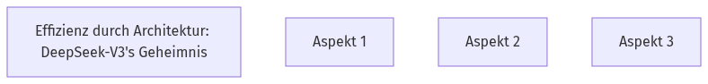

DeepSeek-V3: Ein neuer Open-Source Gigant
Hast du dich je gefragt, wie Open-Source KI-Modelle mit den Großen mithalten können? 🤔 DeepSeek-V3 ist ein riesiges Open-Source Mixture-of-Experts (MoE) Modell mit 671 Milliarden Parametern, von denen 37 Milliarden pro Token aktiv sind. Es wurde entwickelt, um die Lücke zu geschlossenen Modellen zu schließen. Neben DeepSeek-V3 gibt es auch andere Open-Source-Modelle wie LLaMA und Qwen, die große Fortschritte machen, um mit Modellen wie GPT-4o zu konkurrieren.
🧠
Quick Check
Welche Art von Modell ist DeepSeek-V3 hauptsächlich?
DeepSeek-V3 ist ein großes Mixture-of-Experts (MoE) Modell mit 671 Milliarden Parametern, von denen 37 Milliarden pro Token aktiviert werden.
Effizienz durch Architektur: DeepSeek-V3's Geheimnis
Wie schafft es DeepSeek-V3, so leistungsfähig und gleichzeitig kostengünstig zu sein? 🤔 DeepSeek-V3 nutzt bewährte Architekturen wie Multi-head Latent Attention (MLA) für effiziente Inferenz und DeepSeekMoE für kostengünstiges Training. Diese wurden bereits in DeepSeek-V2 erfolgreich eingesetzt. Stell dir vor, du hast ein Auto, das nicht nur schnell ist, sondern auch wenig Benzin verbraucht – genau das erreichen MLA und DeepSeekMoE für KI-Modelle.
🧠
Quick Check
Welche Architekturen tragen zur Effizienz von DeepSeek-V3 bei?
DeepSeek-V3 nutzt Multi-head Latent Attention (MLA) für effiziente Inferenz und DeepSeekMoE für kostengünstiges Training.
Architektur-Grundlagen

Visualisiere die Kernarchitekturen, die DeepSeek-V3 effizient machen.
Intelligente Trainingsstrategien von DeepSeek-V3
Was macht DeepSeek-V3 beim Training so besonders und effizient? 🚀 DeepSeek-V3 setzt auf zwei innovative Strategien: eine hilfsverlustfreie Methode zur Lastverteilung, die die Leistungseinbußen minimiert, und ein Multi-Token Prediction (MTP) Trainingsziel, das die Gesamtleistung verbessert. Das MTP-Ziel kann sogar für eine schnellere Inferenz genutzt werden, indem es die 'spekulative Dekodierung' ermöglicht – wie ein Blick in die Zukunft, um schneller zu sein.
🧠
Quick Check
Welche zwei zusätzlichen Strategien werden in DeepSeek-V3 zur Leistungssteigerung eingesetzt?
DeepSeek-V3 implementiert eine hilfsverlustfreie Strategie für Lastverteilung und ein Multi-Token Prediction Trainingsziel, um die Modellfähigkeiten zu verbessern.
Kosteneffizienz: Das Training von DeepSeek-V3
Wusstest du, dass ein Top-KI-Modell wie DeepSeek-V3 überraschend 'günstig' trainiert werden kann? 💸 DeepSeek-V3 wurde für nur 5,576 Millionen US-Dollar trainiert, was 2,788 Millionen H800 GPU-Stunden entspricht. Dies wurde durch optimiertes Co-Design von Algorithmen, Frameworks und Hardware erreicht. Allein die Vortrainingsphase auf 14,8 Billionen Tokens kostete 5,328 Millionen US-Dollar und dauerte weniger als zwei Monate auf einem Cluster mit 2048 H800 GPUs.
🧠
Quick Check
Wie hoch waren die geschätzten Gesamttrainingskosten von DeepSeek-V3?
Die geschätzten Gesamttrainingskosten von DeepSeek-V3 beliefen sich auf 5,576 Millionen US-Dollar.
Visual Title Here
Visual description and instructions here...